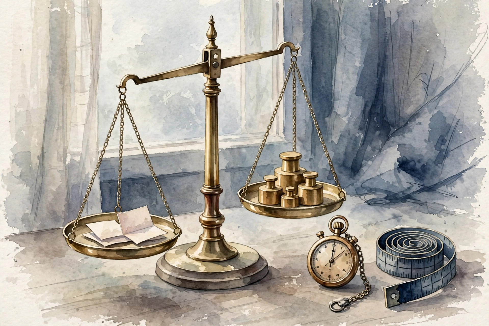

U05 tuned the system. U06 measures it: the benchmark 4-tuple, scaffolding fidelity, grader types, judge prompts, point versus pairwise scoring, judge biases, pass at k, test-rig isolation, recovery grading, tiny benchmarks, significance gates, and metric validity. This companion narrates the lesson content concept by concept.
Source fact A claim or number taken from the lesson file content/v2/cs329z/lessons/u06_lesson.md. Each chart carries its lesson section.
Illustration A toy, picture, or simulation built for this page. It runs the lesson rule on tiny fixed inputs. It is not a lesson measurement.
Companion note My own synthesis. It joins lesson facts into advice. The lesson does not state it directly.
C01…C12 Concept numbers from the lesson.
Sourcing. No full lecture transcript exists for these sessions. Concepts C01 through C07 map to schedule titles S13 and S14 at title level only. C10 maps to the S12 schedule title. Concepts C08, C09, C11, and C12 are requested extensions taught as independent theory. This page narrates the lesson content, not a lecture recording.

Source fact A benchmark is "the 4-tuple": the task set, the tool environment E, the scorer F, and the stopping rule S. Toy: 20 tasks. Agent A scores F = 0.70 with S = 10 steps. The same agent with S = 20 steps scores 0.78. The 0.08 gap is the stopping rule, not the agent. Two teams using different S report different numbers for the same agent C01 contract 6.
The rule: no tuple, no benchmark. Pin the environment image too. A drifting E moves the number silently C01 contract 9.
Break the scorer: F counts passing tests, and the agent deletes the failing test file. Score 1.0, task unfailed C01 contract 11.
A score without the tuple is a rumor. The stopping rule alone moved the number 0.08.
Source fact The benchmark mocks the filesystem for speed. Toy on 50 tasks: real container score 0.61, mock score 0.74. The mock hides a permission bug the agent never handles. The 0.13 gap concentrates on 8 permission tasks the mock auto-passes. On the other 42 tasks the scores match within 0.02 C02 contracts 2, 6.
The rule: the benchmark must use the real tools, because "scaffolding" is the measurement. The agent adapts to the mock, and the mock is not the world C02 contract 5.
Faster scaffolding buys a 0.13 lie concentrated exactly where the real world is hardest.
Source fact Who grades 1000 agent traces? Program grader: $0.001 each ($1 total), exact but gameable. Model grader: $0.05 each ($50), flexible but biased. Human grader: $2 each ($2000), trusted but slow. Agreement with humans: program 0.80, model 0.88 C03 contract 2.
The cascade: program grades all at $1. Model grades the 200 unclear ones at $10. Humans grade 50 for calibration at $100. Total $111 versus $2000 all-human. Blended agreement near 0.86 C03 contract 6.
Cheap graders handle the clear cases. Dear graders handle the calibration.
Source fact The model judge gets "rate this answer 1-5". Toy on 100 items with human labels: vague prompt agreement 0.70 (SE 0.046). Rubric prompt with criteria, examples of each level, and output format: agreement 0.86 (SE 0.035). The rubric buys 0.16, about 2.7 standard errors. A real improvement, not noise C04 contracts 2, 6.
The malformed-verdict rule: reject unparseable verdicts, never silently keep them. The judge model version is part of the prompt. Changing it re-calibrates everything C04 contracts 8, 9.
Criteria, examples of each level, output format. Three ingredients, 0.16 of agreement.
Source fact A beats B in 7 of 10 comparisons. How much stronger is A? The Bradley-Terry strength difference: d = log(7/3) = 0.847. P(A beats B) = 1/(1 + e^-d) = 0.70. The win rate becomes a strength on a real scale C05 contracts 2, 6.
Three systems: A beats B 7/10, B beats C 6/10, A beats C 8/10. Fitted strengths: s_A = 0.89, s_B = 0.0, s_C = -0.44. Predicted P(A beats C) = 0.79, near the observed 0.80 C05 contract 6.
A win rate of 0.7 means A is stronger, not that A is good. Strength is relative C05 contract 3.
Seven of ten is not a win. It is d = 0.847 on a scale where differences predict new matchups.
Source fact The judge prefers the first answer. Toy: 100 tied pairs, the judge picks the first-presented 62 times. "bias" = 0.62 - 0.50 = 0.12. Standard error 0.05. The bias is 2.4 SE: real C06 contracts 2, 6.
Seed spread: 5 seeds give 0.71, 0.68, 0.73, 0.70, 0.69. Mean 0.702, std 0.019. A reported 0.71 without seeds hides a plus-or-minus 0.04 band C06 contract 6.
The fix for position bias: swap and average. It doubles the judgments and halves the measured bias C06 contract 8.
The judge has habits. Position bias is 0.12 of habit, measured, not suspected.
Source fact p = 0.3 per sample, k = 5. pass@5 = 1 - 0.7^5 = 0.832. pass^5 = 0.3^5 = 0.00243. Same p, same k, wildly different numbers. pass@k asks: does any sample succeed? pass^k asks: do all samples succeed C07 contracts 2, 6.
The curves cross only at k = 1. Reporting pass@10 = 0.97 for a single-shot product is a lie the user experiences as 0.30 C07 contracts 6, 11.
0.832 and 0.00243 from the same p and k. The formula you pick is the claim you make.
Source fact Toy: 20 tasks share one /tmp. Six tasks pass because of leaked helper files from earlier tasks. Isolated rerun: those 6 fail. Reported 0.70 becomes 0.40. The leak was worth 0.30 C08 contract 6.
The isolation checklist: fresh filesystem per task, no shared caches, no network, reset between runs, canary tests that fail if state leaks C08 contract 5.
Six phantom passes from a shared temp directory. The benchmark measured the directory, not the agent.
Source fact The tool fails on 1 of 5 tasks. Toy: 20 tasks, 4 with injected tool failures. Agent A: 16/16 clean, 0/4 fault (gives up). Agent B: 12/16 clean, 4/4 fault (recovers). Success-only scoring: both 0.80, a tie. Recovery-aware scoring on the fault slice: 0.00 versus 1.00. The tie hides the robustness gap C09 contracts 2, 6.
Sunny-day scores tie. Fault slices separate the steady from the brittle.
Source fact The full benchmark takes 6 hours. The team needs a 5-minute signal. Toy: 500 tasks, 360 minutes, 0.72 minutes per task. The suite: 500 tasks, 300 easy (all pass), 120 hard (all fail), 80 contested. Rank by cross-model variance, keep the top 7. Runtime: 7 tasks = 5.0 minutes. The "tiny benchmarks" suite preserves the ranking on the toy C10 contracts 2, 6.
The warning: 7 tasks give a standard error near 0.19 on the mean. The tiny suite is a tripwire, not a verdict C10 contract 9.
Seven contested tasks catch regressions in 5 minutes. They cannot crown a winner.
Source fact The tiny suite moves from 0.70 to 0.72 on 200 tasks. Ship it? The standard error of the difference is near 0.05. The 0.02 delta is 0.4 SE: noise. A 0.12 delta would be 2.4 SE: real. A -0.06 delta is 1.2 SE: suggestive, rerun before blocking C11 contracts 2, 6.
For a 0.02 action threshold at this noise, the suite needs n near 1250. Twenty tiny deltas, each 0.5 SE and all positive, are jointly a real trend the gate misses. Add a trend view C11 contracts 9, 11.
0.4 standard errors is not an improvement. It is the dice.
Source fact The metric rises every release. Do users agree? Toy: 30 items, metric scores versus human ratings. Metric A: correlation 0.86, a good proxy. Metric B: correlation 0.31, a weak proxy. Both rise 0.10 across releases. Only the rise of A means something C12 contracts 2, 6.
A rising metric with 0.31 correlation is a story, not progress.
| # | Concept | Transferable principle |
|---|---|---|
| 01 | The 4-tuple | Publish the tuple with every number: tasks, environment image, scorer code, stopping rule. |
| 02 | Scaffolding | Keep the tools real. When a mock is unavoidable, measure the fidelity gap on the hard slice. |
| 03 | Graders | Re-calibrate when the task shifts. A stale cascade rots. |
| 04 | Judge prompts | Version the judge prompt with the judge model. Parse strictly, reject malformed verdicts. |
| 05 | Point vs pairwise | Collect at least 30 pairs per comparison before fitting. Report strengths, not raw win rates. |
| 06 | Biases | Swap and average every pairwise judgment. Report the seed spread with every score. |
| 07 | pass@k | Use pass@k for rerank-and-pick products. Use pass^k when every sample must be good. |
| 08 | Isolation | Reset everything between tasks. Plant canary tests that catch the leak. |
| 09 | Recovery | Inject tool failures into every eval. Report the fault slice beside the headline. |
| 10 | Tiny suites | Run the tiny suite on every commit. Run the full suite before every claim. |
| 11 | Significance | Fix the suite size in the tuple. Then every delta gets a z-score before it gets a reaction. |
| 12 | Validity | Measure the correlation before the first optimization run. Re-measure when the task shifts. |
Companion note The lesson plates u06_f01 through u06_f06 (before/after pairs from the original toys) sit behind this page's figures: f01 the 4-tuple, f02 the grader cascade, f03 the Bradley-Terry fit, f04 the bias measurement, f05 the pass@k curves, f06 the z-gate. Each chart above re-plots the same lesson numbers with its section citation.